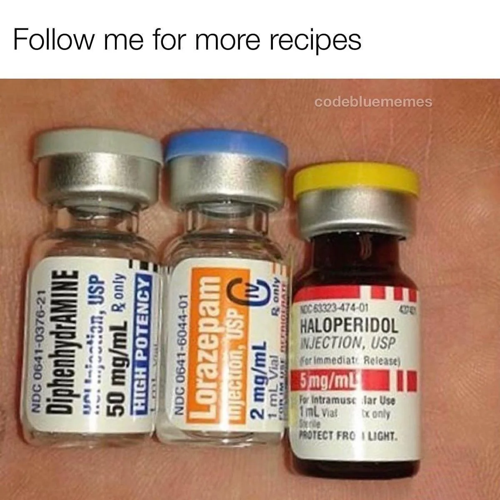

B-52

Description
A B52 is a cocktail of medications commonly used in the emergency room for agitated and aggressive patients. The names comes from the medications it is mixed from ; 50mg Benadryl, 5mg Haldol and 2mg Ativan.
Ingredients
As many extra people as possible
Directions
First, retrieve your medications from the closest med station.
Second, using the blunt tipped needle draw the Benadryl into one syring and the Ativan and Haldol into the other syringe together. You may find it easier to inject 1ml of air into the bottle and then pull the medication up.
Third, switch the blunt tipped needles out for your IM needles on each syringe. This ensures that the injection is much less painful for the ptient.
Fourth, yell "I need hands for a B52 in room(fill in your room number)". Staff members will begin appearing from all directions at this time and begin to help you hold the combative subject.
You and one other staff member will begin to give the B52 cocktail at this time. You will stand on one side of the patient with the other staff member on the other side. At the same time you will both inject the B52 cocktail into the vastus lateralis site on the front of the thigh.
Congratulations, you have now started the process of being initiated into the Emergency Medicine community.